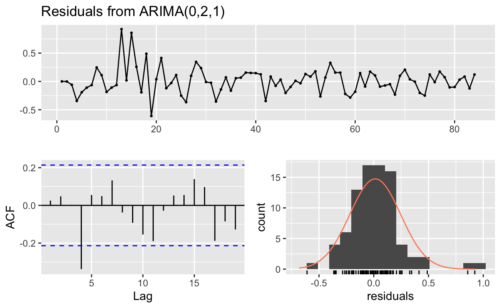

Table of Contents
Se cargan las librerias a utilizar
library(covidMex)
library(urca)
library(tseries)
library(dplyr)
library(ggplot2)
library(highcharter)
library(tidyverse)
library(lubridate)
library(openxlsx)
library(DT)
library(data.table)
library(xts)
library(forecast)
library(astsa)
myMenuItems <- c("downloadPNG", "downloadJPEG", "downloadPDF", "downloadCSV" )
casos_mx_st <- read_csv("Datos10deJunioSeries.csv") %>%
select(-X1)
casos_m<-casos_mx_st %>%
pivot_longer(-Estado, names_to = "fecha_corte",
values_to = "casos")
casos_m$fecha <- format(as.Date(casos_m$fecha_corte,
format = "%d-%m-%Y"), "%Y-%m-%d")
casostotales<-casos_m %>%
group_by(fecha)%>%
summarise(casost=sum(casos))
casostotales_xts<-xts(casostotales$casost,
order.by = as.Date(casostotales$fecha))Introducción a series de tiempo
Los conceptos necesarios para series de tiempo pueden desarrollarse bajo diferentes motivaciones, depende de la literatura que se consulte, para los fines de este trabajo se combinan algunas definiciones formales y unas un poco relajadas, esto último con la intención de hacer que el documento sea más amigable.
A continuación se definirán algunos conceptos.
Un PED \(\{X_t\}\)1 puede considerarse como una función de dos variables \[X:T\times \Omega\longrightarrow S\]
Para cada \(\omega\in\Omega\) fijo, la función \(t\rightarrow X_t(\Omega)\) es llamada una realización del proceso (Rincón 2016).
Definition 2 (Serie de tiempo) Es una realización de un Proceso Estocástico Discreto
\[\left\{ X_t:t\in T\right\}\]
donde \(T\) es un conjunto ordenado cronológicamente cuyos elementos son equidistantesSe quiere estudiar el número de casos confirmados de CoVID-19 en México, esta variable se denotará como \(C_t\) donde \(t\) hace referencia a la fecha de observación de la variable, se tienen las siguientes observaciones
- Los datos presentan un orden temporal
- Dado que no concemos los resultado de estas variables, hay una falta de información, número de pruebas insuficiente, no hay distanciamiento social efectivo, etc.
- Tenemos un proceso estocástico indexado por el tiempo
- Cuando observamos estos datos tenemos una realización, \(S=\mathbb{Z}_+\)
con las observaciones anteriores se tiene un PED \(\{C_t\}\).2 Cabe aclarar que en términos prácticos tenemos una realización finita por la cantidad de datos disponible. La Figura 1 superior muestra la gráfica de la serie. Se podría estar interesado en estudiar el cambio en los casos reportados \(\Delta C_t=C_t-C_{t-1}\), ver Figura 1 inferior, a algún otro comportamento como \(\log(C_t)\) o \(\Delta \log(C_t)\approx \frac{C_t-C_{t-1}}{C_{t-1}}\).
highchart(type = "stock") %>%
hc_yAxis_multiples(
create_yaxis(2, height = c(2, 2))) %>%
hc_add_series(name="Total",casostotales_xts[,1],yAxis=0)%>%
hc_add_series(name="Diferencias",
diff(casostotales_xts[,1],2), yAxis=1)%>%
hc_add_theme(hc_theme_ffx())%>%
hc_title(text = "Casos confirmados para México")%>%
#margin = 20, align = "left",
#style = list(color = "#90ed7d", useHTML = TRUE)) %>%
hc_subtitle(text = "Utilice la herramienta de zoom en la parte
inferior")%>%
hc_tooltip(crosshairs = TRUE, backgroundColor = "#FCFFC5",
shared = TRUE, borderWidth = 5) %>%
#hc_yAxis(title = list(text = "Número de casos confirmados"))%>%
hc_exporting(enabled = TRUE,
filename = "datos",
buttons = list(contextButton = list(menuItems = myMenuItems)))Figure 1: Casos confirmados para México
Una primera observación es que se trabajará con los datos a partir de la detección del primer caso, no tiene sentido trabajar con observaciones nulas, pues la observación de la variable es cero desde \(-\infty\) hasta el día anterior del primer caso, el primer caso confirmado en México fue el 28 de febrero, la Figura 2 muestra esta ventana de datos para las variables, \(C_t\), \(\Delta C_t\), \(\log(C_t)\), \(\Delta \log(C_t)\).
casospar<-casos_m %>%
group_by(fecha)%>%
summarise(casost=sum(casos))%>%
filter(casost!=0)
casospar_xts<-xts(casospar$casost,
order.by = as.Date(casospar$fecha))
highchart(type = "stock")%>%
hc_yAxis_multiples(
create_yaxis(4, height = c(2,2,2,2))) %>%
hc_add_series(name="Parcial",casospar_xts[,1], yAxis=0)%>%
hc_add_series(name="Diferencias P",
diff(casospar_xts[,1]), yAxis=1)%>%
hc_add_series(name="Logaritmo",
log10(casospar_xts[,1]), yAxis=2)%>%
hc_add_series(name="Diferencias L",
diff(log10(casospar_xts[,1])), yAxis=3)%>%
hc_add_theme(hc_theme_ffx())%>%
hc_title(text = "Casos confirmados para México
desde el primer caso")%>%
#margin = 20, align = "left",
#style = list(color = "#90ed7d", useHTML = TRUE)) %>%
hc_subtitle(text = "Utilice la herramienta de zoom en la
parte inferior")%>%
hc_tooltip(crosshairs = TRUE, backgroundColor = "#FCFFC5",
shared = TRUE, borderWidth = 5) %>%
#hc_yAxis(title = list(text = "Número de casos confirmados"))%>%
hc_exporting(enabled = TRUE,
filename = "datos",
buttons = list(contextButton = list(menuItems = myMenuItems)))Figure 2: Casos confirmados para México
Serie de tiempo estacionaria
Un PED \(\{X_t\}\) es estrictamente estacionario si y sólo si para cualesquiera \(t_1 < t_2 < \dots < t_n\) \(n\geq1\), la distribución de probabilidad conjunta de \([X_{t_1},\dots,X_{t_n}]\) coincide con la de \([X_{t_1+h},\dots,X_{t_n+h}]\) para \(h\in\mathbb{Z}-\{0\}\)
Un PED \(\{X_t\}\) es estacionario en media o débilmente estacionario de primer orden si y solo si \(\mathbb{E}(X_t)<\infty\) es constante
Un PED \(\{X_t\}\) es estacionario en autocovarianza o débilmente estacionario de segundo orden si y solo si:
- \(\mathbb{E}(X_t)<\infty\) y \(\mathbb{V}ar(X_t)<\infty\) son constantes y finitas, es decir, no hay dependencia de \(t\)
- \(\mathbb{C}ov(X_t,X_{t-k})\) a lo sumo de pende de \(k\) pero no depende de \(t\)
para trabajar con series de tiempo se pide normalmente que se suponga que la serie es debilmente estacionaria de segundo orden. Por el momento no se realiza esta prueba a los datos de CoVID, en secciones posteriores regresamos a esta pregunta. Por el momento se supondrá \(\{C_t\}\) es estacionaria.
Autocorrelación y autocorrelación parcial
¿Existe una relación entre \(C_t\) y \(C_{t-1},C_{t-2},\dots,C_{t-k},\)?, la función de autorrelación representa la duración y la intensidad de la memoria de un proceso, podría decirse que es una medida de qué tanto afectan los valores pasados a los actuales.
La autocovarianza de orden \(k\), de un PED \(\{X_t\}\) estacionario se define como
\[\gamma_k=\mathbb{C}ov(X_t,X_{t+k})\]
La autocorrelación simple de orden k, de un PED \(\{X_t\}\) estacionario se define como
\[\rho_k=\frac{\gamma_k}{\gamma_0};\;\; k=0,1\dots\]
La función \(k\rightarrow\rho_k\) es llamada la función de autocorrelación (ACF), el dominio de la función se deduce a partir del supuesto de estacionariedad, esta función nos da la relación entre entre \(X_t\) y \(X_{t-k}\).
En la práctica se tienen que utilizar estimadores, el valor numérico para el estimador \(\hat\rho_k\) es
\[r_{k} = \frac{\sum\limits_{t=k+1}^T (x_{t}-\bar{x})(x_{t-k}-\bar{x})} {\sum\limits_{t=1}^T (x_{t}-\bar{x})^2}\]
donde \(x_t\) es el valor observado de \(X_t\), \(T\) denota el número de datos. Cada valor se considera individualmente significativo al \(5%\) cuando \(r_k>1.96/\sqrt{T}\). Si se quiere hacer una prueba conjunta de significancia de las \(K\) primeras autocorrelaciones usualmente se calcula el estadístico de Ljuang-Box que aproximadamente sigue una distribución \(~\chi^2(K)\)
\[Q_{LB}=T(T-2)\sum_{k=1}^{K}\frac{r_k^2}{T-k}\]
la hipótesis nula es \(\rho_1=\ldots\rho_K=0\).
Se aplica lo anterior a \(\{C_t\}\), la Figura 3 muestra el correlograma (la gráfica de \(r_k\) vs \(k\)) para \(k\in\{1,2,\ldots,20 \}\), de la definición \(r_0=1\), las lineas azules punteadas indican el intervalo de confianza al \(95\%\).
capar<-casospar$casost[1:84]
acf(capar,lag.max=20, ylab="Autocorrelación r_k",
main="Función de autocorrelación", xlab="retraso k")Figure 3: Función de autocorrelación
Observamos una dependencia entre \(C_t\) y sus valores anteriores, esta dependencia va dismunuyendo conforme \(k\) aumenta, una herramienta visual para corroborar estas situaciones es graficar \(C_t\) vs \(C_{t-k}\) para diferentes valores de \(k\), la Figura 4 muestra dichas gráficas.
gglagplot(capar) +
ggtitle("Grafias de C_t vs C_{t-k}")+
labs(y = "C_t",x="C_{t-k}")Figure 4: Grafias de C_t vs C_{t-k}
Existe una medida del grado de asociación lineal entre dos componentes de \(\{X_t\}\) que descarta que dicha asociación suceda por los componentes intermedios entre ellos, precisando:
La autocorrelación parcial de orden \(k\) de un PED \(\{X_t\}\) estacionario se define como el parámetro \(\phi_{kk}\) de la regresión
\[\begin{equation} \tilde{X}_t=\phi_{k1}\tilde{X}_{t-1}+\phi_{k2}\tilde{X}_{t-2}+\dots+\phi_{kk}\tilde{X}_{t-k}+ U_t \tag{1} \end{equation}\]
con \(\tilde{X}_{t-i}=X_{t-i}-\mu_X\), \(i = 0,\dots,k\), \(U_t\) independiente de \(Y_{t-i}\) para todo \(i\geq 1\), la función \(k\rightarrow\phi_{kk}\) suele llamarse función de autocorrelación parcial (PACF) del proceso.
Existen por lo menos dos formas de estimar esta cantidad, solo se menciona una de ellas que es realizar la regresión que indica la ecuación (1), cada estimación puede considerarse individualmente significativa al \(5\%\) cuando \(\phi_{kk}>1.96/\sqrt{T}\).
Se aplica este concepto a \(\{C_t\}\), la Figura 5 muestra la gráfica de \(\phi_{kk}\) vs \(k\) para \(k\in\{1,2,\ldots,20 \}\), las lineas azules punteadas indican el intervalo de confianza al \(95\%\).
pacf(capar,lag.max=20, ylab="Autocorrelación parcial r_k",
main="Función de autocorrelación parcial", xlab="retraso k")Figure 5: Función de autocorrelación parcial
La ACF se puede calcular para series no estacionarias, cuando la serie no es estacionaria la ACF decrece muy lento. Hasta el momento se ha supuesto que \(\{C_t\}\) es estacionaria, ¿qué tanto se puede sostener esta hipótesis al observar su correlograma?, todo depende de la interpretación de muy lento, se sigue sosteniendo la hipótesis de estacionariedad.
Modelos ARMA(\(p\),\(q\))
Un proceso estocástico estacionario \(\{X_t\}\) sigue un modelo autorregresivo-media móvil de orden \((p,q)\) o ARMA(\(p,q\)), si y sólo si
\[X_t=\mu+\sum_{i=1}^p\phi_iX_{t-i}-\sum_{j=1}^q\theta_jA_{t-j}+A_t\] para \(t\in\mathbb{Z}\), donde \(\{A_t\}\sim NIID(0,\sigma_A^2)\), \(\mu\), \(\phi_i\) y \(\theta_j\) son parametros.
para la condición de estacionariedad se tiene que las soluciones de la siguiente ecuación están fuera del círculo unitario
\[1-\sum_{i=1}^p\phi_ix^i=0\] se dice que el modelo es invertible si las soluciones de la siguente ecuación están fuera del círculo unitario
\[1-\sum_{j=1}^q\theta_jx^j=0\]
Cuando los parámetros \(\theta_j\) son nulos se dice que el proceso sigue un modelo AR(\(p\))=ARMA(\(p,0\)), si los parámetros \(\phi_i\) son nulos se dice que el proceso sigue un modelo MA(\(q\))=ARMA(\(0,q\))
Los procesos estacionarios ARMA(\(p,q\)) se caracterizan por el comportamiento conjunto de su ACF y PACF, en la Figura 6 se muestra el comportamiento, la tabla se se tomó del siguiente enlace
Figure 6: Tabla de ACF y PACF
Si se revisan las gráficas de ACF y PACF para \(\{C_t\}\) entonces probablemente la variable \(C_t\) se pueda escribir como un modelo autorregresivo de orden \(p\), AR(p), es decir
\[C_t=\beta_0+\beta_1 C_{t-1}+\beta_{t-2}C_{t-2}+\dots+\beta_{t-p}C_{t-p}+U_t\] suponiendo \(\mathbb{E}(U_t|C_{t-1},C_{t-2},\dots)=0\). Con base en los resultados obtenidos de autocorrelación se realizan las regresiones para 1, 2 y 3 retardos.
capar_AR1<-lm(capar~lag(capar))
capar_AR2<-lm(capar~lag(capar)+lag(capar,2))
capar_AR3<-lm(capar~lag(capar)+lag(capar,2)+lag(capar,3))
summary(capar_AR1)
Call:
lm(formula = capar ~ lag(capar))
Residuals:
Min 1Q Median 3Q Max
-589.18 -128.49 -31.71 110.55 526.15
Coefficients:
Estimate Std. Error t value Pr(>|t|)
(Intercept) 1.343e+02 2.806e+01 4.786 7.55e-06 ***
lag(capar) 1.050e+00 1.427e-03 735.383 < 2e-16 ***
---
Signif. codes: 0 '***' 0.001 '**' 0.01 '*' 0.05 '.' 0.1 ' ' 1
Residual standard error: 205.1 on 81 degrees of freedom
(1 observation deleted due to missingness)
Multiple R-squared: 0.9999, Adjusted R-squared: 0.9998
F-statistic: 5.408e+05 on 1 and 81 DF, p-value: < 2.2e-16
summary(capar_AR2)
Call:
lm(formula = capar ~ lag(capar) + lag(capar, 2))
Residuals:
Min 1Q Median 3Q Max
-590.81 -68.44 -28.44 57.99 380.60
Coefficients:
Estimate Std. Error t value Pr(>|t|)
(Intercept) 68.35218 27.59501 2.477 0.0154 *
lag(capar) 1.56567 0.09603 16.304 < 2e-16 ***
lag(capar, 2) -0.54174 0.10081 -5.374 7.58e-07 ***
---
Signif. codes: 0 '***' 0.001 '**' 0.01 '*' 0.05 '.' 0.1 ' ' 1
Residual standard error: 177.3 on 79 degrees of freedom
(2 observations deleted due to missingness)
Multiple R-squared: 0.9999, Adjusted R-squared: 0.9999
F-statistic: 3.596e+05 on 2 and 79 DF, p-value: < 2.2e-16
summary(capar_AR3)
Call:
lm(formula = capar ~ lag(capar) + lag(capar, 2) + lag(capar,
3))
Residuals:
Min 1Q Median 3Q Max
-570.41 -66.10 -31.54 62.34 410.82
Coefficients:
Estimate Std. Error t value Pr(>|t|)
(Intercept) 65.94304 28.91192 2.281 0.0253 *
lag(capar) 1.52140 0.11690 13.014 <2e-16 ***
lag(capar, 2) -0.41615 0.21745 -1.914 0.0594 .
lag(capar, 3) -0.08323 0.13019 -0.639 0.5245
---
Signif. codes: 0 '***' 0.001 '**' 0.01 '*' 0.05 '.' 0.1 ' ' 1
Residual standard error: 178.9 on 77 degrees of freedom
(3 observations deleted due to missingness)
Multiple R-squared: 0.9999, Adjusted R-squared: 0.9999
F-statistic: 2.337e+05 on 3 and 77 DF, p-value: < 2.2e-16Observamos que los 3 modelos tienen \(R^2\) y \(R^2\)-ajustada bastante alta, tenemos que los coeficientes en los dos primeros modelos por separado y conjuntamete son estadísticamente significativos, en el tercero dos de los coeficientes no son significativos, pero esto no interfiere en la predicción que pueda hacerse (Hyndman and Athanasopoulos 2018). Entonces se aplica un criterio para elegir uno de estos modelos, se utiliza el criterio de información de Bayes3 (BIC) (Stock and Watson 2012), el cual se define como:
\[BIC(p)=\ln\left(\frac{SR(p)}{T}\right)+\frac{p+1}{T}\ln(T)\] aquí \(SR(p)\) es la suma de los cuadrados de los residuos del modelo AR(\(p\)) estimado, se elige el modelo que presente menor BIC
a<-log(sum(capar_AR1$residuals^2)/length(capar))+(2)*
log(length(capar))/length(capar)
b<-log(sum(capar_AR2$residuals^2)/length(capar))+(3)*
log(length(capar))/length(capar)
c<-log(sum(capar_AR3$residuals^2)/length(capar))+(4)*
log(length(capar))/length(capar)
c(a,b,c)
[1] 10.71623 10.45209 10.49764Se elige AR(\(2\)), así el modelo estimado es
\[\hat{C}_t=68.35218+1.565 C_{t-1}-0.541C_{t-2}\]
La Figura 7 muestra los estimados con el modelo AR(2) y la Figura 8 muestra la misma información pero en escala logarítmica.
autoplot(ts(capar), series="Casos observados") +
autolayer(ts(fitted(capar_AR2)),series="Casos ajustados AR(2)") +
xlab("días") + ylab("") +
ggtitle("Casos observados y casos estimados AR(2)")Figure 7: Casos observados y casos estimados AR
autoplot(ts(log10(capar)), series="Casos observados") +
autolayer(ts(log10(fitted(capar_AR2))),series="Casos ajustados AR(2)") +
xlab("días") + ylab("") +
ggtitle("Casos observados y casos estimados AR(2)")Figure 8: Casos observados y casos estimado AR logaritmo
Si se realiza una prueba de ruido blanco a los residuales:
Box.test(residuals(capar_AR2), type="Ljung-Box")
Box-Ljung test
data: residuals(capar_AR2)
X-squared = 0.11569, df = 1, p-value = 0.7338No se rechaza que los residuos se distribuyan como ruido blanco. Hasta este momento todo parece indicar que se encontró un modelo que puede ser usado para predecir el número de casos confirmados, el problema que se presenta es que se ha supuesto que la serie es estacionaria, se aplicará un test para ver si esto es correcto.
Serie de tiempo no estacionaria
Si la serie presenta una raíz unitaria (y con esto es no estacionaria), es decir, \(z=1\) es una solución de la ecuación
\[1-\beta_1z-\beta_2z^2-\dots+\beta_pz^p=0\] entonces la serie presenta una tendencia estocástica, lo que implica que los coeficientes y los estadísticos \(t\) de las regresiones previamente realizados no tienen buenas características (los coeficientes son sesgados y el estadístico no se distribuye de forma normal). Para revisar si es el caso, se realiza el contraste de Dickey-Fuller aumentado (Stock and Watson 2012), para ello se estima el siguiente modelo4
\[\begin{equation} \Delta C_t=\beta_0+\delta C_{t-1} + \gamma_1\Delta C_{t-1}+\gamma_2 C _{t-2}+\dots+\gamma_p \Delta C_{t-p+1}+u_t \tag{2} \end{equation}\]
donde \[H_0:\delta=0\;\;\text{vs}\;\;H_1:\delta<0 \]
bajo la hipótesis nula, \(C_t\) tiene tendencia estocástica, bajo la hipótesis alternativa, \(C_t\) es estacionaria. Para calcular esta regresión se tiene que proponer un orden \(p\),5 la instrucción urca::ur.df nos proporciona un criterio de selección y nos permite configurar la regresión como en la ecuación (2)
a<-ur.df(capar, selectlags = "BIC", type="drift")
summary(a)
###############################################
# Augmented Dickey-Fuller Test Unit Root Test #
###############################################
Test regression drift
Call:
lm(formula = z.diff ~ z.lag.1 + 1 + z.diff.lag)
Residuals:
Min 1Q Median 3Q Max
-590.81 -68.44 -28.44 57.99 380.60
Coefficients:
Estimate Std. Error t value Pr(>|t|)
(Intercept) 68.352185 27.595014 2.477 0.0154 *
z.lag.1 0.023934 0.004944 4.841 6.30e-06 ***
z.diff.lag 0.541739 0.100811 5.374 7.58e-07 ***
---
Signif. codes: 0 '***' 0.001 '**' 0.01 '*' 0.05 '.' 0.1 ' ' 1
Residual standard error: 177.3 on 79 degrees of freedom
Multiple R-squared: 0.954, Adjusted R-squared: 0.9528
F-statistic: 819.2 on 2 and 79 DF, p-value: < 2.2e-16
Value of test-statistic is: 4.8407 12.2256
Critical values for test statistics:
1pct 5pct 10pct
tau2 -3.51 -2.89 -2.58
phi1 6.70 4.71 3.86los resultados indican que no se puede rechazar la hipótesis nula, pues el estadístico \(t\) para el coeficiente z.lag.1 (que juega el papel de \(\delta\)) es positivo, la línea tau2 indica los valores críticos y los porcentajes de significancia. Se repite el cálculo, pero sin utilizar las herramientas preconstruidas y se obtiene el mismo resultado. En este caso el estadístico de interés es el asociado a la variable lag(capar)[-1] (que juega el papel de \(\delta\)).
capar_adf<-lm(diff(capar)~lag(capar)[-1]+diff(lag(capar)))
summary(capar_adf)
Call:
lm(formula = diff(capar) ~ lag(capar)[-1] + diff(lag(capar)))
Residuals:
Min 1Q Median 3Q Max
-590.81 -68.44 -28.44 57.99 380.60
Coefficients:
Estimate Std. Error t value Pr(>|t|)
(Intercept) 68.352185 27.595014 2.477 0.0154 *
lag(capar)[-1] 0.023934 0.004944 4.841 6.30e-06 ***
diff(lag(capar)) 0.541739 0.100811 5.374 7.58e-07 ***
---
Signif. codes: 0 '***' 0.001 '**' 0.01 '*' 0.05 '.' 0.1 ' ' 1
Residual standard error: 177.3 on 79 degrees of freedom
(1 observation deleted due to missingness)
Multiple R-squared: 0.954, Adjusted R-squared: 0.9528
F-statistic: 819.2 on 2 and 79 DF, p-value: < 2.2e-16Si en la prueba anterior se modifica la hipótesis alternativa: \(C_t\) es estacionaria en torno a una tendencia temporal lineal determinística, entonces la regresión de Dickey-Fuller se escribe como
\[\begin{equation} \Delta C_t=\beta_0+\alpha t+\delta C_{t-1} + \gamma_1\Delta C_{t-1}+\gamma_2 C _{t-2}+\dots+\gamma_p \Delta C_{t-p+1}+u_t \tag{3} \end{equation}\]
Se calcula la regresión de la ecuación (3), para comprobar que los resultados sean correctos, se utiliza la instrucción tseries::adf.test que tiene por defecto la estimación temporal.
capar_adft<-lm(diff(capar)~lag(capar)[-1]+diff(lag(capar))+c(1:(length(capar)-1)))
summary(capar_adft)
Call:
lm(formula = diff(capar) ~ lag(capar)[-1] + diff(lag(capar)) +
c(1:(length(capar) - 1)))
Residuals:
Min 1Q Median 3Q Max
-511.54 -61.04 -3.99 56.53 380.73
Coefficients:
Estimate Std. Error t value Pr(>|t|)
(Intercept) -1.023e+02 4.957e+01 -2.063 0.042432 *
lag(capar)[-1] 2.680e-02 4.588e-03 5.840 1.14e-07 ***
diff(lag(capar)) 2.747e-01 1.140e-01 2.410 0.018304 *
c(1:(length(capar) - 1)) 7.551e+00 1.887e+00 4.002 0.000142 ***
---
Signif. codes: 0 '***' 0.001 '**' 0.01 '*' 0.05 '.' 0.1 ' ' 1
Residual standard error: 162.5 on 78 degrees of freedom
(1 observation deleted due to missingness)
Multiple R-squared: 0.9618, Adjusted R-squared: 0.9604
F-statistic: 655.2 on 3 and 78 DF, p-value: < 2.2e-16
adf.test(capar, k=1)
Augmented Dickey-Fuller Test
data: capar
Dickey-Fuller = 5.8402, Lag order = 1, p-value = 0.99
alternative hypothesis: stationaryDado el valor estadístico (\(5.84\)), no se puede rechazar en favor de una \(C_t\) estacionaria con tendencia temporal lineal determinística.
Así, la hipótesis sobre la estacionariedad de \(\{C_t\}\) debe de abandonarse, lo cual implica que los resultados obtenidos bajo la suposición de estacionariedad deben descartarse.
Transformaciones de series no estacionarias
Algunos series no estacionarias se pueden transformar para convertirlas en series estacionarias. Normalmente se tienen dos transformaciones:
- Transformación de Box-Cox para estabilizar la dispersión, es decir, obtener estacionariedad en la varianza
\[w_t=\begin{cases} log(x_t)&\lambda=0\\ &\\ \frac{x_t^\lambda-1}{\lambda}&\lambda\neq 0 \end{cases}\]
- Aplicar diferencias es los datos para estabilizar el nivel; es decir, obtener estacionariedad en media
Se recomienda trabajar con las diferencias de \(C_t\) (Stock and Watson 2012)-(Wooldridge 2010)-(Holmes, M. D, and Ward 2020), es decir, con \(\Delta C_t=C_t-C_{t-1}\) o con las segundas diferencias \(\Delta^2 C_t=C_t-2C_{t-1}+C_{t-2}\), de tal forma que al aplicar la preba de Dickey-Fuller a la serie resultante se rechaze la hipétesis nula en favor de una serie estacionaria.
Existen varias formas de abordar este problema, se ha elegido utilizar la instrucción forecast::ndiffs que calcula la cantidad de diferencias necesarias, una vez que se tiene este número se aplica la prueba mencionada para verificar dicha situación.
ndiffs(capar, test = "adf")
[1] 2
a<-ur.df(diff(diff(capar)), selectlags = "BIC", type="drift")
summary(a)
###############################################
# Augmented Dickey-Fuller Test Unit Root Test #
###############################################
Test regression drift
Call:
lm(formula = z.diff ~ z.lag.1 + 1 + z.diff.lag)
Residuals:
Min 1Q Median 3Q Max
-436.93 -57.67 -37.99 32.10 577.43
Coefficients:
Estimate Std. Error t value Pr(>|t|)
(Intercept) 53.5034 22.3501 2.394 0.0191 *
z.lag.1 -1.5425 0.1884 -8.187 4.44e-12 ***
z.diff.lag 0.1900 0.1244 1.527 0.1308
---
Signif. codes: 0 '***' 0.001 '**' 0.01 '*' 0.05 '.' 0.1 ' ' 1
Residual standard error: 192.9 on 77 degrees of freedom
Multiple R-squared: 0.6285, Adjusted R-squared: 0.6189
F-statistic: 65.14 on 2 and 77 DF, p-value: < 2.2e-16
Value of test-statistic is: -8.1871 33.5467
Critical values for test statistics:
1pct 5pct 10pct
tau2 -3.51 -2.89 -2.58
phi1 6.70 4.71 3.86En este caso, se aplicó la prueba sin el factor de tendencia, pues las primeras diferencias eliminan la tendencia lineal determinista, ver (Stock and Watson 2012)-(Wooldridge 2010). Se comprueba que \(\Delta^2 C_t=C_t-2C_{t-1}+C_{t-2}\) es una serie estacionaria. La Figura 9 muestra el correlograma y la Figura 10 la autocorrelación parcial.
capardd1<-diff(capar)
capardd2<-diff(capar,differences = 2)
acf(capardd2,lag.max=20, ylab="Autocorrelación r_k",
main="Función de autocorrelación", xlab="retraso k")Figure 9: Función de autocorrelación
capardd1<-diff(capar)
capardd2<-diff(capar,differences = 2)
pacf(capardd2,lag.max=20, ylab="Autocorrelación parcial r_k",
main="Función de autocorrelación", xlab="retraso k")Figure 10: Función de autocorrelación parcial
Puesto que \(\Delta^2 C_t\) es estacionaria, al observar las gráficas de ACF, PACF, y de acuerdo a la Figura 6 se obtiene que la estructura propuesta es un modelo ARMA(\(0,1\)). Es decir,
\[\Delta^2 C_t=-\theta_1A_{t-1}+A_t\] en términos del proceso \(\{C_t\}\)
\[\begin{equation} C_t=2C_{t-1}-C_{t-2}-\theta_1A_{t-1}+A_t \tag{4} \end{equation}\]
Más adelante se llega a esta estructura con las herramientas preconstruidas en R.
Modelos ARIMA(\(p,d,q\))
Se definen algunos conceptos para escribir la definición del modelo
El operador de retardo se define como
\[B^dX_t=X_{t-d};\;\;d\in\mathbb{N}\]
El operador de diferencia se define como
\[\Delta^dX_t=(1-B)^dX_t;\;\;d\in\mathbb{N}\]
Un proceso estocástico \(\{X_t\}\) es integrado de orden \(d\), \(d\in\mathbb{N}\), si y sólo si el proceso \(\{\Delta^d X_t\}\) sigue un modelo ARMA(\(p,q\)) estacionario e invertible.
Un proceso estocástico \(\{X_t\}\) es integrado de orden \(d\) si y sólo si \(\{X_t\}\) sigue un modelo autorregresivo-integrado-media móvil de orden \((p,d,q)\), o ARIMA(\(p,d,q\)) del tipo
\[\phi(B)\Delta^dX_t=\mu+\theta(B)A_t\]
donde \(\{A_t\}\sim NIID(0,\sigma_A^2)\), \(\mu\), \(\phi_i\) y \(\theta_j\) son parámetros y
\[1-\sum_{i=1}^p\phi_ix^i=\phi(x)\]
\[1-\sum_{j=1}^q\theta_jx^j=\theta(x)\]
Siguiendo las definiciones se puede decir que un proceso \(\{X_t\}\) que sigue un modelo ARIMA(\(p,d,q\)) equivale a que el proceso estacionario \(\{\Delta^d X_t\}\) siga un modelo ARMA(\(p,q\))
Estimación del modelo de un serie de tiempo
Se estima el modelo ARIMA(\(p,d,q\)) para \(\{C_t\}\) se utilizan las herramientas prediseñadas en R, en específico forecast::auto.arima, que tiene las siguientes características
- Se estima el modelo con la estructura \(\phi(B)(\Delta^dX_t-\mu_1)=(1+\sum_{j=1}^q\theta_jB^j)A_t\)
- Para elegir al mejor modelo se prefiere utilizar el criterio de información de Akaike corregido
- Se utiliza el método MLE (Maximum likelihood estimation) para encontrar los parámetros
Teniendo esto en cuenta, se obtiene el modelo ARIMA(\(0,2,1\)), que coincide con lo obtenido en la ecuación (4)
fit1<-auto.arima(capar, trace=TRUE)
ARIMA(2,2,2) : 1105.638
ARIMA(0,2,0) : 1105.071
ARIMA(1,2,0) : 1101.677
ARIMA(0,2,1) : 1100.356
ARIMA(1,2,1) : 1102.119
ARIMA(0,2,2) : 1102.133
ARIMA(1,2,2) : 1103.458
Best model: ARIMA(0,2,1) Con este modelo se tiene que los parámetros son
fit1
Series: capar
ARIMA(0,2,1)
Coefficients:
ma1
-0.3403
s.e. 0.1212
sigma^2 estimated as 37844: log likelihood=-548.1
AIC=1100.2 AICc=1100.36 BIC=1105.02El modelo se puede escribir como
\[ C_t=2C_{t-1}-C_{t-2}-0.3403A_{t-1}+A_t \]
donde \(A_t\) es un ruido blanco con varianza \(37844\), el signo del parámetro se conserva por la propuesta de R del modelo antes comentada.
Falta verificar las codiciones de ruido blanco sobre los residuales de la estimación,
checkresiduals(fit1)
Ljung-Box test
data: Residuals from ARIMA(0,2,1)
Q* = 34.03, df = 9, p-value = 8.823e-05
Model df: 1. Total lags used: 10Se rechaza la hipótesis nula, como puede comprobarse en la gráfica anterior, los residuales no presentan varianza constante.
Así, se tiene que regresar a los datos para estabilizar la varianza, para esto se utiliza la tranformación de Cox- Box
\[w_t=\begin{cases} log(c_t)&\lambda=0\\ &\\ \frac{c_t^\lambda-1}{\lambda}&\lambda\neq 0 \end{cases}\]
Se encuentra el valor de \(\lambda=0.2602152\), la Figura 11 muestra los datos transformados
lam<-BoxCox.lambda(capar)
lam
[1] 0.2602152
plot(BoxCox(capar,lambda=lam), main="Datos transformados",
xlab="día", ylab="Transformacion")
Figure 11: Datos transformados por Cox Box
Se estima nuevamente el modelo, pero transformando los datos, esto se logra con el argumento lambda, se observa nuevamente una estructura ARIMA(\(0,2,1\))
fit<-auto.arima(capar, lambda=lam,trace=TRUE)
ARIMA(2,2,2) : 3.99394
ARIMA(0,2,0) : 18.86529
ARIMA(1,2,0) : 3.680341
ARIMA(0,2,1) : -0.8826731
ARIMA(1,2,1) : 0.9499297
ARIMA(0,2,2) : 1.069859
ARIMA(1,2,2) : 2.264461
Best model: ARIMA(0,2,1)
fit
Series: capar
ARIMA(0,2,1)
Box Cox transformation: lambda= 0.2602152
Coefficients:
ma1
-0.5860
s.e. 0.1071
sigma^2 estimated as 0.05546: log likelihood=2.52
AIC=-1.03 AICc=-0.88 BIC=3.78Los residuales de la estimación se comportan como ruido blanco, la prueba estadística y gráficos lo confirman.
checkresiduals(fit)
Ljung-Box test
data: Residuals from ARIMA(0,2,1)
Q* = 16.006, df = 9, p-value = 0.06675
Model df: 1. Total lags used: 10Así el modelo ajustado es
\[\begin{align} W_t=2W_{t-1}-W_{t-2}-0.5860A_{t-1}+A_t \notag \\ C_t=(\lambda W_t+1)^{1/\lambda} \tag{5} \end{align}\]
donde \(A_t\) es un ruido blanco con varianza \(0.05546\) y \(\lambda=0.2602152\).
Predicción de una serie de tiempo
Para las predicciones se toma el modelo (5) y se evalua en \(t+h|T\), es decir, se estimará \(\hat C_{t+h|T}\) sujeto a que se conoce hasta el dato \(T\)-ésimo, para cada valor entero de \(h\geq1\) se obtendrá una predicción, la estimación debe ser en orden, pues si no se tiene el dato \(C_t\) para un determinado tiempo este debe ser sustituido por su estimado previamente obtenido. Lo usual es remplazar \(A_t\) pata \(t\geq T+1\) con \(0\). El modelo de predicción queda como
\[\begin{align} \hat W_{t+h|T}=2W_{t+h-1|T}-W_{t+h-2|T}-0.5860A_{t+h-1|T}+A_{t+h|T} \notag \\ \hat C_{t+h|T}=(\lambda W_{t+h|T}+1)^{1/\lambda} \tag{6} \end{align}\]
Cada predicción tiene asociada un intervalo de confianza (Hyndman and Athanasopoulos 2018), en particular el intervalo de confianza para la primer estimación \(\hat W_{t+1|T}\) es \(\hat W_{t+1|T}\pm 1.96\hat\sigma_A\). La Figura 12 muestra la predicción y dos intervalos con nivel de confianza diferente.
estimacion<-forecast(fit,20)
datatable(as.data.table(estimacion))Figure 12: Tabla de prediccion
Desde el comienzo del análisis se trabajó con aproximadamente el \(80\%\) de los datos disponibles, dejando un \(20\%\) para probar la predicción, en particular el modelo estimado predice que al 10 de junio de 2020 habría un total de \(137624\) y la medición disponible a ese día fue de \(129184\).
autoplot(estimacion,series="Predicción")+
autolayer(ts(casospar$casost),series="Casos observados") +
xlab("días") + ylab("") +
ggtitle("Casos observados y predicción")Ahora se ilustrará porque es importante que se satisfagan las condiciones de ruido blanco en los residuales de la estimación. La siguiente figura muestra la predicción de un modelo ARIMA(\(0,2,1\)) pero donde no se ha realizado la transformación de Box.
estimacion0<-forecast(fit1,20)
autoplot(estimacion0,series="Predicción sin Box")+
autolayer(ts(casospar$casost),series="Casos observados") +
xlab("días") + ylab("") +
ggtitle("Casos observdos y predicción sin Box")Tenemos que el observado incluso esta más allá del intervalo de confianza. Se realizará la prueba de Diebold-Mariano cuya hipótesis nula establece que los dos métodos a probar tienen el mismo nivel de exactitud ( accuracy6 ) y la alternativa es que estos niveles son distintos.
dm.test(estimacion$residuals,estimacion0$residuals)
Diebold-Mariano Test
data: estimacion$residualsestimacion0$residuals
DM = -4.4059, Forecast horizon = 1, Loss function power = 2,
p-value = 3.124e-05
alternative hypothesis: two.sidedLos dos niveles son distintos, se puede hacer una modificación de la prueba de tal forma que la hipóteiss alternativa indique si la exactitud de un método es menor a otro
dm.test(estimacion$residuals,estimacion0$residuals, alternative="less")
Diebold-Mariano Test
data: estimacion$residualsestimacion0$residuals
DM = -4.4059, Forecast horizon = 1, Loss function power = 2,
p-value = 1.562e-05
alternative hypothesis: lessLo anterior indica que el método donde no se realizó la transformación de Box tiene menos exactitud (el segundo argumento de la función dm.test).
Existen otras medidas que se pueden realizar para decidir sobre las predicciones. Algunas son las siguientes:
\[\begin{align*} \text{Mean error: ME} & = \text{mean}(e_{t}),\\ \text{Root mean squared error: RMSE} & = \sqrt{\text{mean}(e_{t}^2)}\\ \text{Mean absolute error: MAE} & = \text{mean}(|e_{t}|),\\ \text{Mean absolute percentage error: MAPE}& = \text{mean}(|p_{t}|). \end{align*}\]
donde \(e_{T+h} = x_{T+h} - \hat{x}_{T+h|T}\), \(p_{t} = 100 e_{t}/x_{t}\). Se busca que cada uno sea lo menor posible. En nuestro caso, todas ellas fallan a favor del método donde se realizó la transformación de Box.
accuracy(estimacion$mean,casospar$casost[85:104])
ME RMSE MAE MPE MAPE
Test set -2731.435 3924.698 2820.751 -2.42996 2.565069
accuracy(estimacion0$mean,casospar$casost[85:104])
ME RMSE MAE MPE MAPE
Test set 5252.801 6791.241 5252.801 4.893384 4.893384Conclusiones
El ajuste ARIMA(\(p,d,q\)) realizado a los casos confirmados de CoVID-2019 para México tiene una mejor confianza a corto plazo, podría utilizarse para complementar otros modelos pero me parece que no los sustituye.
Holmes, E. E., Scheuerell M. D, and E. J. Ward. 2020. Applied Time Series Analysis for Fisheries and Enviromental Data. Northwet Fisheries Science Center, 2275, Montlake BlvdE., Seatle, WA 98112. https://nwfsc-timeseries.github.io/atsa-labs/.
Hyndman, Rob J, and George Athanasopoulos. 2018. Forecasting: Principles and Practice. 2nd ed. Melbourn, Australia: OTexts. https://otexts.com/fpp2/.
Rincón, Luis. 2016. Introducción a Los Procesos Estocásticos. 1st ed. México: UNAM, Facultad de Ciencias.
Stock, James H., and Mark M. Watson. 2012. Introducción a La Econometría. 3rd ed. Melbourn, Australia: PEARSON.
Wooldridge, Jeffrey M. 2010. Introducción a La Econometría. 4th ed. México: CENGAGE.
para no saturar la notación se estará utilizando \(\{X_t\}\) para referirse aun proceso estocástico discreto↩
la actualización de los datos podria verse como una realización distinta y podría trabajarse sobre eso↩
cabe mencionar qeu existen otros criterios, como el criterio de información de Akaike↩
segun (Stock and Watson 2012) hay un subindice de más pero segun esta prueba que parece correcta hay un subindice de menos↩
normalmente se elige de tal forma que los residuales de la regresión sean ruido blanco↩
la proximidad de las observaciones a los valores observados↩